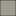

<!doctype html>
<html lang="en">
    <head>
        <meta charset="utf-8">
        <meta http-equiv="X-UA-Compatible" content="IE=edge">
        <meta name="viewport" content="initial-scale=1,user-scalable=no,maximum-scale=1,width=device-width">
        <meta name="mobile-web-app-capable" content="yes">
        <meta name="apple-mobile-web-app-capable" content="yes">
        <link rel="stylesheet" href="css/leaflet.css">
        <link rel="stylesheet" href="css/L.Control.Layers.Tree.css">
        <link rel="stylesheet" href="css/L.Control.Locate.min.css">
        <link rel="stylesheet" href="css/qgis2web.css">
        <link rel="stylesheet" href="css/fontawesome-all.min.css">
        <link rel="stylesheet" href="css/leaflet.photon.css">
        <link rel="stylesheet" href="css/leaflet-measure.css">
        <style>
        html, body, #map {
            width: 100%;
            height: 100%;
            padding: 0;
            margin: 0;
        }
        </style>
        <title>CEDIS y Desarrollos Industriales en Ecatepec de Morelos </title>
    </head>
    <body>
        <div id="map">
        </div>
        <script src="js/qgis2web_expressions.js"></script>
        <script src="js/leaflet.js"></script>
        <script src="js/L.Control.Layers.Tree.min.js"></script>
        <script src="js/L.Control.Locate.min.js"></script>
        <script src="js/leaflet.rotatedMarker.js"></script>
        <script src="js/leaflet.pattern.js"></script>
        <script src="js/leaflet-hash.js"></script>
        <script src="js/Autolinker.min.js"></script>
        <script src="js/rbush.min.js"></script>
        <script src="js/labelgun.min.js"></script>
        <script src="js/labels.js"></script>
        <script src="js/leaflet.photon.js"></script>
        <script src="js/leaflet-measure.js"></script>
        <script src="data/EstadodeMxico_1.js"></script>
        <script src="data/Limitemunicipal_2.js"></script>
        <script src="data/Desarrollosindustriales_3.js"></script>
        <script src="data/CEDIS_4.js"></script>
        <script>
        var map = L.map('map', {
            zoomControl:false, maxZoom:28, minZoom:1
        }).fitBounds([[19.425294986295416,-99.1288881402139],[19.488788352436895,-98.99458468900121]]);
        var hash = new L.Hash(map);
        map.attributionControl.setPrefix('<a href="https://github.com/tomchadwin/qgis2web" target="_blank">qgis2web</a> &middot; <a href="https://leafletjs.com" title="A JS library for interactive maps">Leaflet</a> &middot; <a href="https://qgis.org">QGIS</a>');
        var autolinker = new Autolinker({truncate: {length: 30, location: 'smart'}});
        // remove popup's row if "visible-with-data"
        function removeEmptyRowsFromPopupContent(content, feature) {
         var tempDiv = document.createElement('div');
         tempDiv.innerHTML = content;
         var rows = tempDiv.querySelectorAll('tr');
         for (var i = 0; i < rows.length; i++) {
             var td = rows[i].querySelector('td.visible-with-data');
             var key = td ? td.id : '';
             if (td && td.classList.contains('visible-with-data') && feature.properties[key] == null) {
                 rows[i].parentNode.removeChild(rows[i]);
             }
         }
         return tempDiv.innerHTML;
        }
        // modify popup if contains media
        function addClassToPopupIfMedia(content, popup) {
            var tempDiv = document.createElement('div');
            tempDiv.innerHTML = content;
            var imgTd = tempDiv.querySelector('td img');
            if (imgTd) {
                var src = imgTd.getAttribute('src');
                if (/\.(jpg|jpeg|png|gif|bmp|webp|avif)$/i.test(src)) {
                    popup._contentNode.classList.add('media');
                    setTimeout(function() {
                        popup.update();
                    }, 10);
                } else if (/\.(mp3|wav|ogg|aac)$/i.test(src)) {
                    var audio = document.createElement('audio');
                    audio.controls = true;
                    audio.src = src;
                    imgTd.parentNode.replaceChild(audio, imgTd);
                    popup._contentNode.classList.add('media');
                    setTimeout(function() {
                        popup.setContent(tempDiv.innerHTML);
                        popup.update();
                    }, 10);
                } else if (/\.(mp4|webm|ogg|mov)$/i.test(src)) {
                    var video = document.createElement('video');
                    video.controls = true;
                    video.src = src;
                    video.style.width = "400px";
                    video.style.height = "300px";
                    video.style.maxHeight = "60vh";
                    video.style.maxWidth = "60vw";
                    imgTd.parentNode.replaceChild(video, imgTd);
                    popup._contentNode.classList.add('media');
                    // Aggiorna il popup quando il video carica i metadati
                    video.addEventListener('loadedmetadata', function() {
                        popup.update();
                    });
                    setTimeout(function() {
                        popup.setContent(tempDiv.innerHTML);
                        popup.update();
                    }, 10);
                } else {
                    popup._contentNode.classList.remove('media');
                }
            } else {
                popup._contentNode.classList.remove('media');
            }
        }
        var title = new L.Control({'position':'topright'});
        title.onAdd = function (map) {
            this._div = L.DomUtil.create('div', 'info');
            this.update();
            return this._div;
        };
        title.update = function () {
            this._div.innerHTML = '<h2>CEDIS y Desarrollos Industriales en Ecatepec de Morelos </h2>';
        };
        title.addTo(map);
        var abstract = new L.Control({'position':'bottomleft'});
        abstract.onAdd = function (map) {
            this._div = L.DomUtil.create('div',
            'leaflet-control abstract');
            this._div.id = 'abstract'
                this._div.setAttribute("onmouseenter", "abstract.show()");
                this._div.setAttribute("onmouseleave", "abstract.hide()");
                this.hide();
                return this._div;
            };
            abstract.hide = function () {
                this._div.classList.remove("abstractUncollapsed");
                this._div.classList.add("abstract");
                this._div.innerHTML = 'i'
            }
            abstract.show = function () {
                this._div.classList.remove("abstract");
                this._div.classList.add("abstractUncollapsed");
                this._div.innerHTML = 'El mapa muestra la ubicación de los CEDIS y desarrollos industriales en el municipio de Ecatepec de Morelos, destacando su distribución dentro del territorio municipal. Se identifican los centros de distribución mediante símbolos puntuales y las áreas de desarrollos industriales como polígonos. Además, se incluyen los municipios colindantes y la localización estatal de Ecatepec para un contexto geográfico. ';
        };
        abstract.addTo(map);
        var zoomControl = L.control.zoom({
            position: 'topleft'
        }).addTo(map);
        L.control.locate({locateOptions: {maxZoom: 19}}).addTo(map);
        var measureControl = new L.Control.Measure({
            position: 'topleft',
            primaryLengthUnit: 'meters',
            secondaryLengthUnit: 'kilometers',
            primaryAreaUnit: 'sqmeters',
            secondaryAreaUnit: 'hectares'
        });
        measureControl.addTo(map);
        document.getElementsByClassName('leaflet-control-measure-toggle')[0].innerHTML = '';
        document.getElementsByClassName('leaflet-control-measure-toggle')[0].className += ' fas fa-ruler';
        var bounds_group = new L.featureGroup([]);
        function setBounds() {
        }
        map.createPane('pane_GoogleTerrain_0');
        map.getPane('pane_GoogleTerrain_0').style.zIndex = 400;
        var layer_GoogleTerrain_0 = L.tileLayer('https://mt1.google.com/vt/lyrs=p&x={x}&y={y}&z={z}', {
            pane: 'pane_GoogleTerrain_0',
            opacity: 1.0,
            attribution: '<a href="https://www.google.at/permissions/geoguidelines/attr-guide.html">Map data ©2015 Google</a>',
            minZoom: 1,
            maxZoom: 28,
            minNativeZoom: 0,
            maxNativeZoom: 20
        });
        layer_GoogleTerrain_0;
        map.addLayer(layer_GoogleTerrain_0);
        function pop_EstadodeMxico_1(feature, layer) {
            var popupContent = '<table>\
                    <tr>\
                        <th scope="row">Nombre del municipio</th>\
                        <td>' + (feature.properties['NOMGEO'] !== null ? autolinker.link(String(feature.properties['NOMGEO']).replace(/'/g, '\'').toLocaleString()) : '') + '</td>\
                    </tr>\
                </table>';
            var content = removeEmptyRowsFromPopupContent(popupContent, feature);
			layer.on('popupopen', function(e) {
				addClassToPopupIfMedia(content, e.popup);
			});
			layer.bindPopup(content, { maxHeight: 400 });
        }

        function style_EstadodeMxico_1_0() {
            return {
                pane: 'pane_EstadodeMxico_1',
                opacity: 1,
                color: 'rgba(35,35,35,0.8)',
                dashArray: '',
                lineCap: 'butt',
                lineJoin: 'miter',
                weight: 1.0, 
                fill: true,
                fillOpacity: 1,
                fillColor: 'rgba(120,115,101,0.8)',
                interactive: true,
            }
        }
        map.createPane('pane_EstadodeMxico_1');
        map.getPane('pane_EstadodeMxico_1').style.zIndex = 401;
        map.getPane('pane_EstadodeMxico_1').style['mix-blend-mode'] = 'normal';
        var layer_EstadodeMxico_1 = new L.geoJson(json_EstadodeMxico_1, {
            attribution: '',
            interactive: true,
            dataVar: 'json_EstadodeMxico_1',
            layerName: 'layer_EstadodeMxico_1',
            pane: 'pane_EstadodeMxico_1',
            onEachFeature: pop_EstadodeMxico_1,
            style: style_EstadodeMxico_1_0,
        });
        bounds_group.addLayer(layer_EstadodeMxico_1);
        map.addLayer(layer_EstadodeMxico_1);
        function pop_Limitemunicipal_2(feature, layer) {
            var popupContent = '<table>\
                    <tr>\
                        <th scope="row">Nombre del municipio</th>\
                        <td>' + (feature.properties['NOMGEO'] !== null ? autolinker.link(String(feature.properties['NOMGEO']).replace(/'/g, '\'').toLocaleString()) : '') + '</td>\
                    </tr>\
                </table>';
            var content = removeEmptyRowsFromPopupContent(popupContent, feature);
			layer.on('popupopen', function(e) {
				addClassToPopupIfMedia(content, e.popup);
			});
			layer.bindPopup(content, { maxHeight: 400 });
        }
        function style_Limitemunicipal_2_0(feature) {
            var context = {
                feature: feature,
                variables: {}
            };
            // Start of if blocks and style check logic
            if (exp_Limitemunicipal_2rule0_eval_expression(context)) {
                  return {
                pane: 'pane_Limitemunicipal_2',
                opacity: 1,
                color: 'rgba(35,35,35,0.8)',
                dashArray: '',
                lineCap: 'butt',
                lineJoin: 'miter',
                weight: 1.0, 
                fill: true,
                fillOpacity: 1,
                fillColor: 'rgba(255,12,147,0.8)',
                interactive: true,
            };
                }
            else {
                return {fill: false, stroke: false};
            }
        }
        map.createPane('pane_Limitemunicipal_2');
        map.getPane('pane_Limitemunicipal_2').style.zIndex = 402;
        map.getPane('pane_Limitemunicipal_2').style['mix-blend-mode'] = 'normal';
        var layer_Limitemunicipal_2 = new L.geoJson(json_Limitemunicipal_2, {
            attribution: '',
            interactive: true,
            dataVar: 'json_Limitemunicipal_2',
            layerName: 'layer_Limitemunicipal_2',
            pane: 'pane_Limitemunicipal_2',
            onEachFeature: pop_Limitemunicipal_2,
            style: style_Limitemunicipal_2_0,
        });
        bounds_group.addLayer(layer_Limitemunicipal_2);
        map.addLayer(layer_Limitemunicipal_2);
        function pop_Desarrollosindustriales_3(feature, layer) {
            var popupContent = '<table>\
                    <tr>\
                        <th scope="row">Nombre del desarrollo industrial </th>\
                        <td>' + (feature.properties['Name'] !== null ? autolinker.link(String(feature.properties['Name']).replace(/'/g, '\'').toLocaleString()) : '') + '</td>\
                    </tr>\
                </table>';
            var content = removeEmptyRowsFromPopupContent(popupContent, feature);
			layer.on('popupopen', function(e) {
				addClassToPopupIfMedia(content, e.popup);
			});
			layer.bindPopup(content, { maxHeight: 400 });
        }

        function style_Desarrollosindustriales_3_0() {
            return {
                pane: 'pane_Desarrollosindustriales_3',
                opacity: 1,
                color: 'rgba(35,35,35,1.0)',
                dashArray: '',
                lineCap: 'butt',
                lineJoin: 'miter',
                weight: 1.0, 
                fill: true,
                fillOpacity: 1,
                fillColor: 'rgba(41,36,53,1.0)',
                interactive: true,
            }
        }
        map.createPane('pane_Desarrollosindustriales_3');
        map.getPane('pane_Desarrollosindustriales_3').style.zIndex = 403;
        map.getPane('pane_Desarrollosindustriales_3').style['mix-blend-mode'] = 'normal';
        var layer_Desarrollosindustriales_3 = new L.geoJson(json_Desarrollosindustriales_3, {
            attribution: '',
            interactive: true,
            dataVar: 'json_Desarrollosindustriales_3',
            layerName: 'layer_Desarrollosindustriales_3',
            pane: 'pane_Desarrollosindustriales_3',
            onEachFeature: pop_Desarrollosindustriales_3,
            style: style_Desarrollosindustriales_3_0,
        });
        bounds_group.addLayer(layer_Desarrollosindustriales_3);
        map.addLayer(layer_Desarrollosindustriales_3);
        function pop_CEDIS_4(feature, layer) {
            var popupContent = '<table>\
                    <tr>\
                        <th scope="row">Nombre del CEDIS </th>\
                        <td>' + (feature.properties['Nombre'] !== null ? autolinker.link(String(feature.properties['Nombre']).replace(/'/g, '\'').toLocaleString()) : '') + '</td>\
                    </tr>\
                    <tr>\
                        <th scope="row">Asentamiento </th>\
                        <td>' + (feature.properties['Asentamien'] !== null ? autolinker.link(String(feature.properties['Asentamien']).replace(/'/g, '\'').toLocaleString()) : '') + '</td>\
                    </tr>\
                </table>';
            var content = removeEmptyRowsFromPopupContent(popupContent, feature);
			layer.on('popupopen', function(e) {
				addClassToPopupIfMedia(content, e.popup);
			});
			layer.bindPopup(content, { maxHeight: 400 });
        }

        function style_CEDIS_4_0() {
            return {
                pane: 'pane_CEDIS_4',
        rotationAngle: 0.0,
        rotationOrigin: 'center center',
        icon: L.icon({
            iconUrl: 'markers/CEDIS_4.svg',
            iconSize: [15.2, 15.2]
        }),
                interactive: true,
            }
        }
        map.createPane('pane_CEDIS_4');
        map.getPane('pane_CEDIS_4').style.zIndex = 404;
        map.getPane('pane_CEDIS_4').style['mix-blend-mode'] = 'normal';
        var layer_CEDIS_4 = new L.geoJson(json_CEDIS_4, {
            attribution: '',
            interactive: true,
            dataVar: 'json_CEDIS_4',
            layerName: 'layer_CEDIS_4',
            pane: 'pane_CEDIS_4',
            onEachFeature: pop_CEDIS_4,
            pointToLayer: function (feature, latlng) {
                var context = {
                    feature: feature,
                    variables: {}
                };
                return L.marker(latlng, style_CEDIS_4_0(feature));
            },
        });
        bounds_group.addLayer(layer_CEDIS_4);
        map.addLayer(layer_CEDIS_4);
        const url = {"Nominatim OSM": "https://nominatim.openstreetmap.org/search?format=geojson&addressdetails=1&",
        "France BAN": "https://api-adresse.data.gouv.fr/search/?"}
        var photonControl = L.control.photon({
            url: url["Nominatim OSM"],
            feedbackLabel: '',
            position: 'topleft',
            includePosition: true,
            initial: true,
            // resultsHandler: myHandler,
        }).addTo(map);
        photonControl._container.childNodes[0].style.borderRadius="10px"
        // Create a variable to store the geoJSON data
        var x = null;
        // Create a variable to store the marker
        var marker = null;
        // Add an event listener to the Photon control to create a marker from the returned geoJSON data
        var z = null;
        photonControl.on('selected', function(e) {
            console.log(photonControl.search.resultsContainer);
            if (x != null) {
                map.removeLayer(obj3.marker);
                map.removeLayer(x);
            }
            obj2.gcd = e.choice;
            x = L.geoJSON(obj2.gcd).addTo(map);
            var label = typeof obj2.gcd.properties.label === 'undefined' ? obj2.gcd.properties.display_name : obj2.gcd.properties.label;
            obj3.marker = L.marker(x.getLayers()[0].getLatLng()).bindPopup(label).addTo(map);
            map.setView(x.getLayers()[0].getLatLng(), 17);
            z = typeof e.choice.properties.label === 'undefined'? e.choice.properties.display_name : e.choice.properties.label;
            console.log(e);
            e.target.input.value = z;
        });
        var search = document.getElementsByClassName("leaflet-photon leaflet-control")[0];
        search.classList.add("leaflet-control-search")
        search.style.display = "flex";
        search.style.backgroundColor="rgba(255,255,255,0.5)" 

        // Create the new button element
        var button = document.createElement("div");
        button.id = "gcd-button-control";
        button.className = "gcd-gl-btn fa fa-search search-button";

        // Insert the button at the beginning of the search control
        search.insertBefore(button, search.firstChild);
        last = search.lastChild;
        last.style.display = "none";
        button.addEventListener("click", function (e) {
            if (last.style.display === "none") {
                last.style.display = "block";
            } else {
                last.style.display = "none";
            }
        });
        var overlaysTree = [
            {label: ' CEDIS', layer: layer_CEDIS_4},
            {label: ' Desarrollos industriales ', layer: layer_Desarrollosindustriales_3},
            {label: 'Limite municipal<br /><table><tr><td style="text-align: center;"></td><td>Ecatepec de Morelos</td></tr></table>', layer: layer_Limitemunicipal_2},
            {label: ' Estado de México ', layer: layer_EstadodeMxico_1},
            {label: "Google Terrain", layer: layer_GoogleTerrain_0},]
        var lay = L.control.layers.tree(null, overlaysTree,{
            //namedToggle: true,
            //selectorBack: false,
            //closedSymbol: '&#8862; &#x1f5c0;',
            //openedSymbol: '&#8863; &#x1f5c1;',
            //collapseAll: 'Collapse all',
            //expandAll: 'Expand all',
            collapsed: true,
        });
        lay.addTo(map);
        setBounds();
        </script>        
    </body>
</html>
